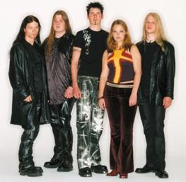
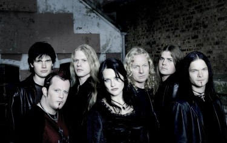

A banda UZI Suicide teve origem na Noruega
em 1993. Tocando um estilo bem próximo do Heavy Metal,
iniciou o trabalho com o guitarrista Morten Veland e o baterista
Kenneth Olsson. Em 1995, com a entrada de Einar Moen, a banda
mudou o nome para Tristania.
Veland e Moen deixaram a banda no ano seguinte,
devido a alguns problemas relacionados a direção
musical. Passado algum tempo, Veland e Moen decidem reiniciar
os trabalhos musicais e ressuscitar o antigo projeto de uma banda.
Olsson foi convidado para retornar ao grupo. O baixista Rune Osterhus
e o guitarrista Anders Hidle também integraram o Tristania,
agora com uma proposta musical voltada para o Doom/Gothic Metal,
no ano mesmo ano de 1996.
Passados
alguns meses dedicados para as próprias composições,
o Tristania preparava-se para entrar em estúdio. Mas algo
ainda faltava: o vocal feminino. Poucas semanas antes das gravações,
Vibeke Stene foi apresentada à banda, e sua voz harmoniosa
encaixou-se com perfeição nas músicas. O
Tristania estava pronto para o primeiro trabalho da carreira.
Em maio de 1997, o CD independente de estréia
saiu com 500 cópias para divulgação entre
as gravadoras, rádios, revistas e jornais. Uma pequena
parte foi vendida pelos próprios integrantes para ajudar
a cobrir despesas com a produção.
A reação da imprensa superou a expectativa,
e Vibeke foi convidada para integrar o Tristania definitivamente.
Ainda em 1997, esta demo chegou até a gravadora Napalm
Records, que não hesitou em fechar contrato com a nova
banda. Outros três CD’s foram lançados e a
demo foi regravada com mais qualidade.
O CD Window’s Weeds foi para as
lojas e o resultado não poderia ter sido melhor. O primeiro
álbum oficial trazia um metal gótico sinfônico
repleto de arranjos clássicos e corais líricos.
Pouco tempo depois, o EP Angina foi lançado, antecipando
o que viria no próximo trabalho.
Beyond The Veil é um dos grandes
álbuns de Metal de todos os tempos. Foi com este trabalho
que o Tristania conquistou definitivamente o público. Com
a qualidade inconfundível de suas faixas, o CD atingiu
em cheio os amantes do emergente Gothic Metal e a banda surgiu
na cena mundial como uma revelação da música
norueguesa.
Na gravação do CD seguinte, o vocalista
Veland deixou a banda. O trabalho World of Glass seria
comprometido se não fosse a participação
de Ronny Thorsen (Trail of Tears), que foi convidado
para gravar os vocais rasgados de Morten Veland. Quando lançado,
World of Glass repercutiu de forma extremamente positiva, comprovando
o talento e a capacidade do Tristania.
Em
2004, a banda realizou uma turnê européia ao
lado do Therion.
Ao todo foram mais de 30 apresentações na
Polônia, Itália, França, Inglaterra,
Bélgica, Alemanha e outros países. No mesmo
ano, tiveram início as gravações do
novo álbum.
O Tristania voltou aos estúdios a partir
de abril de 2004 para gravar Ashes. O novo álbum
traz nove faixas inéditas e conta com a produção
de Børge Finstad e arte gráfica de Christian Ruud.
A música Equilibrium foi escolhida para a divulgação
e também se tornou o primeiro clipe da banda.
Lançado em janeiro de 2005, Ashes
é um trabalho sofisticado com arranjos impecáveis
que caracterizam a discografia do Tristania. Em abril, a banda
lança o videoclipe da faixa Libre, gravado na
Suécia. Em junho, o guitarrista Svein Terje Solvang, que
já atuava como músico de apoio, é efetivado
como membro da banda. Em março do ano seguinte, iniciam-se
as gravações do novo álbum. Porém,
o vocalista Kjetil Ingebrethsen anuncia seu desligamento "amigável"
da banda, alegando motivos pessoais.
Em maio, as gravações são
concluídas; mas o lançamento do novo trabalho intitulado
Illumination ainda não tem previsão. Uma
turnê agendada para setembro é adiada devido ao fato
de Vibeke estar concluindo seus estudos.
Finalmente, em janeiro de 2007, Illumination
é lançado. Este trabalho segue a linha de Ashes,
no qual as onze músicas destacam o peso das guitarras e
os vocais guturais, mesclado com breves passagens de sintetizadores
e corais. Os destaques são as faixas Mercyside
e Deadlands.
No final de fevereiro, a banda anuncia em seu
site oficial o desligamento de Vibeke Stene. A nota oficial cita
que Vibeke deixou a banda por iniciativa própria e questões
pessoais. Sem dúvida, é uma grande perda, não
apenas para a banda, mas pra toda a cena do Metal.
Apenas em outubro o Tristania anunciou oficialmente
a substituta de Vibeke Stene. Mariangela Demurtas, italiana de
28 anos, era a nova "front woman" da banda norueguesa.
Mariangela, apelidada de Mary, teve passagens em outras bandas
menos expressivas e tornou-se membro do Tristania ao enviar uma
demo para ser avaliada. Assim, Mary foi convidada para uma audição
e, em seguida, foi escolhida pela própria banda e produtores.
O Tristania é considerada
uma das precursoras de seu estilo, surgindo a partir dela, várias
outras, principalmente da Noruega, que traçam o mesmo perfil
musical, tornando-se uma referência.
Por
Spectrum
Downloads
Disponíveis: